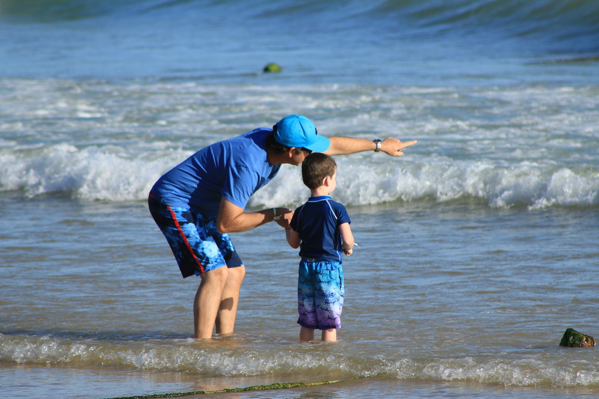
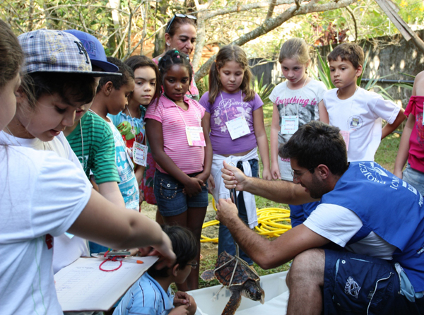
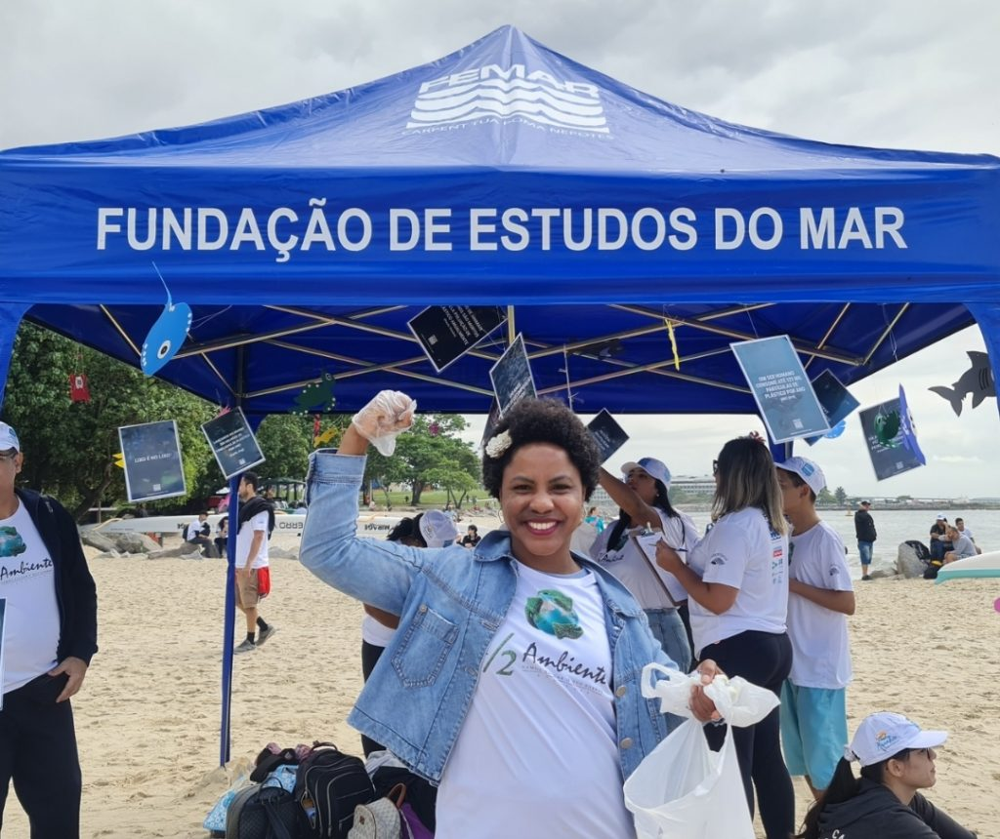

Público que será impactado



Nossa solução atende diversos stakeholders: pesquisadores, ambientalistas, formuladores de políticas e a comunidade global, fornecendo informações precisas sobre a saúde dos oceanos para promover conscientização e ação.
Por meio de parcerias estratégicas com instituições de ensino e ONGs, ampliamos nosso alcance para envolver estudantes e voluntários na proteção dos mares. Essas colaborações fortalecem nossa capacidade de coletar dados, promover conscientização e capacitar futuras lideranças ambientais, construindo uma rede global de apoio à preservação dos ecossistemas marinhos.